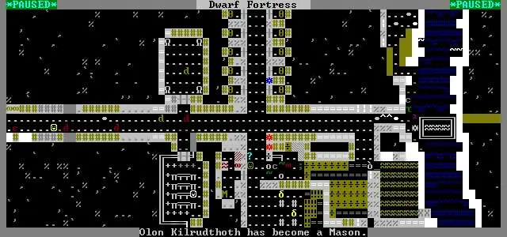

The hardest AI problem you’ve never heard of.
Dwarves. Elephants. AI. Let the games begin.
![]()
There’s a notion in artificial intelligence known as Moravec’s paradox: it’s relatively easy to teach a computer to play chess or checkers at a pretty decent level, but near impossible to teach it something as trivial as bipedal motion. (Hassabis 2017) The sensorimotor tasks that our truly wonderful brains have mastered by our second birthday are much harder to teach a computer than something arguably as ‘complex’ as beating a chess grandmaster. In that sense, what Garry Kasparov learned in the first months of his life were much more ‘difficult’, from the perspective of AI, than his mastery of chess. So is, for that matter, learning to play Super Mario. What’s hard for us is simple for computers, and vice versa. (Pinker 2003)
Tiny problems, big world
Chess, for all its complexity, has a relatively small problem space. It is a spatially confined game of a limited number of pieces – which, by the way, is monotonically decreasing over time. Pieces have limited moves, so that a piece of type p being at position (\(x, y\)) at time t has a finite number of places it can be at \(t+1\) (valid moves). Consequently, for any state of the chessboard, we can describe a finite set of possible states one step later. Recursively, for any state of the chessboard, we can enumerate any future state. That this enumeration involves a rapidly growing and rather massive problem space is not, inherently, a huge problem. There are discrete steps in time, and each of those steps moves us along the tree. In short: however big the problem space, it can be enumerated.
This is important because processes like this (known as Markov decision processes) are kind of problem machine learning excels at. We can enumerate a bunch of these trees from start to finish (that is, individual chess games), and eventually the computer builds a representation of whether a particular move given particular preceding moves is or is not a good idea. Or, more formally, we can define a number of actions called policies in this context, so that given a system in state s and the action a, \(\pi_{a, s} = p(a_t = a | s_t = s)\). We can then define a reward function for any policy \(\pi\), so that \(R(\pi) \sim \sum_{t = 0}^{\infty} r(\pi, t)\) for all \(r(\pi, t)\) being the reward gained by taking the action corresponding to the policy \(\pi\) at time step \(t\).1 Then, given a state \(s\) and a policy \(\pi\), we can calculate the expectation value of \(R_{\pi} | t\). And if we can calculate it, we can sic one of the many optimisation algorithms on it to maximise it. There, chess played, game won, end of.
1 Specifically, by the factor \(\gamma^t\), where \(\gamma\) is the discount factor. For an excruciating amount of maths about all this, your best bet is Sutton and Barto (2d ed. 2018), gratifyingly available online for free. The discount factor , which Sutton and Barto call ‘discount rate’, is explained at Ch. 3.3, p. 54 onwards.
Let’s get more problematic
Except, as I said, chess is, well, relatively simple to enumerate. What about non-enumerable systems? For starters, we can dispense with discrete time and start operating in continuous time. Things get a whole lot more complicated when you start to move from discrete maths to continuous values (and that’s why I largely stay on the discrete side, in the comfort of number theory and integer indices). What if a game of chess didn’t have turns, but rather played at whatever speed the players can simultaneously manage? And had a large problem space, a ton of different actors, oh, and let’s sprinkle some degree of randomness into it, so as to make the whole thing impossible to understand and computationally insane to model?
It turns out that we already have games like that. And one of them might just be the ultimate test for AI. Enter Dwarf Fortress.
Well, then you’d have Dwarf Fortress.

Now, in case you haven’t heard of Dwarf Fortress: it’s not much to look at, to put it mildly. It’s got none of the smooth, flashy graphics of AAA gaming titles, the deep story of a game like Destiny or the humour of, say, Borderlands.[2]. What it does have is a level of intricacy that makes it a game on the literal edge between insanity and genius (and typically, when it comes to Dwarf Fortress, the two are present in a racemic mixture). You’re in charge of building, unsurprisingly, a fortress, full of dwarves. You explore, mine, craft and inevitably get killed, more than likely by a) elephants, b) lava. In the meantime, random things happen, in a procedurally generated world. From time to time, dwarves become possessed, elephants assault your fortress and things are set on fire. Behind all this is a staggering volume of intricate game mechanics for just about everything.
Agent based insanity
Let me illustrate this with an actual example. In December 2015, a player has complained that the cats are dying in his fortress. It has emerged that they were dying of ethanol poisoning. It turns out that Dwarf Fortress models (individually, for each animal in the game!) the ingestion of substances from body coverings for animals. Cats lick their paws, and ingest a part of whatever is on their paws. In that case, it was spilled beer (which obviously dwarves drink in non-trivial quantities). A large number of dwarves stopping their inebriation in progress to do something else would result in large spills of alcoholic beverage, which the cats would get on their paws, which they would eventually lick, which would eventually get them drunk and, until a bug fix, dead.
Now, this isn’t something special. Pretty much everything in Dwarf Fortress is like this. Oh, and almost all of it is procedurally generated. This makes Dwarf Fortress an extreme case: it is arguably the most difficult game that can be ‘learned’ that we know of.
By ‘can be learned’, I mean that it is a game that can still have a distinct ordered set of policies \(\pi_{1 ... n}\) sorted by \(E[R(\pi)]\), i.e. the expectation value of the reward function of the policy over time \(t_0 \to t_{\infty}\). We don’t see tossing a (fair) coin and guessing heads or tails as a winnable or ‘learnable’ game because there is no policy that is better than any of the others, and no amount of gathering information after a handful of coin tosses will make our predictive accuracy any better. Dwarf Fortress can’t exactly be won, but it can be not lost for a considerable time, which one can regard as a result (the sum reward is the time of survival, something I call the Kaplan-Meier definition of winning).
Thus, it’s not all up to randomness, but rather up to being able to operate in a non-Markovian problem space – a very non-Markovian one, given the sheer variety of crazy things that can happen. Games like go or chess teach computers how to adapt to an opponent (who, incidentally, pursues the same objective). Learning Super Mario using deep Q learning is somewhat more about winning against an environment (in the sense that there is no competing player whose requirements for success mirror one’s own). Learning Dwarf Fortress, however, teaches computers how to operate in a space of uncertainty.
If Dwarf Fortress sounds familiar to you, it’s because it is. It’s effectively a gamified version of agent-based modelling (ABMs), a technique we use to model populations by modelling individuals in a space of uncertainty governed by certain probability distributions. Take the classic SIR model of disease population dynamics. You can use a system of differential equations – or you can create a random population of a few hundred dwarves and simulate what would happen if you let some infection loose among them. Indeed, I reflect on this in my recent book:
One of the most complex computer games ever devised is called Dwarf Fortress. It is not much to look at: its graphics are the terminal-based structures that were in vogue in the 1980s. What makes Dwarf Fortress an extraordinary game is the depth of agent-based logic: every character, every enemy unit, even pets are endowed with a hugely complex agent-based behavioral model. As an example, cats in Dwarf Fortress can stray into puddles of spilled beer, lick their paws later, and succumb to alcohol poisoning.
Yet agent-based modeling is about much more than belligerent dwarves and drunk cats. Agent-based models are powerful computational tools to simulate large populations of boundedly rational actors who act according to preset preferences, although often enough in a stochastic manner. They can simulate the complex human behaviors of quasi-rational decision-making, represent large populations and, through iterative simulation, highlight likely behavioral outcomes of crowds.
Most of the foregoing chapters described a kind of statistical mean-field dynamics of epidemiology – we might have known what a population does, but not much about any one individual in a population. At best, we could deduce the state or behavior of an individual in terms of likelihoods, e.g. if 30% of a population is infectious, there is approximately a 30% chance a randomly selected individual from the population will be infectious. Like statistical mechanics, it offers us the ability to reason about dynamics at the population scale without having to model each individual.
This chapter explores an alternative approach. Agent-based models are primarily inductive—we obtain information about the population by large-scale, repeated simulation of individual agents. Such models allow a different glimpse into the operation of an epidemic process. Many phenomena that would be challenging to model on their own, such as heterogeneous populations with multiple heterogeneities, some continuous and others categorical, become almost trivially easy to analyze using agent-based models. On the other hand, agents can adopt complicated behaviors and very complex behavioral profiles are relatively easy to describe in the agent-paradigm, because we only need to describe an individual rather than an entire tion. This chapter discusses how we can leverage agent-based models for understanding infectious disease dynamics.
Agent-based models help us understand issues that are, or might be, too complex to be analytically solved. It is, in a way, brute-forcing reality by creating a simulation and running it enough times to give a numerical solution. Where human issues are involved, agent-based models are the way to go to understand the complexity of human behaviour and choices. This is so even if most agent-based models have nowhere near the sophistication of Dwarf Fortress.
If you want me worried, call me when an AI has mastered Dwarf Fortress
Algorithms that can infer a person’s emotional state from the position vector of facial landmarks or detect signs of stress in someone’s voice do not give a system any wider understanding of humans. Nor does beating them at playing go, chess, checkers or Starcraft. None of these abilities would be sufficient for an intelligence, artificial or not, to navigate the real world. Understanding a detailed, thorough agent-based model of a human (or dwarven!) society, however, comes much closer to it. A machine that can play chess is cool. A machine that can play Dwarf Fortress with good results is much more than that – it is a competitor, a social reasoner who can make assumptions about actions that hold true at least stochastically.
One of the side effects of working in research in the AI field is that people will inevitably ask when our new robot overlords will show up. I have never been too concerned by that. With all due respect to Hawking, Musk, Norvig and other purveyors of AI fears, I am unconcerned by the ‘state of the art’. When it comes to complexity that involves cats licking beer off their paws and getting drunk, AI is still a good way away from showing a decent understanding of continuous stochastic systems.
If you want me worried, call me when an AI has mastered Dwarf Fortress.
Citation
@misc{csefalvay2023,
author = {{Chris von Csefalvay}},
title = {The Hardest {AI} Problem You’ve Never Heard Of.},
date = {2023-03-07},
url = {https://chrisvoncsefalvay.com/posts/dwarf-fortress/},
doi = {10.59350/5dp4z-d5e22},
langid = {en-GB}
}